2020
London
06-01-2020
1/01 - Un capodanno strano questo! Papà nelle Marche da nonno Mario e noi in partenza per Londra...fino all'ultimo indecise se partire. Ma avevamo organizzato tutto....e così partiamo la notte di Capodanno
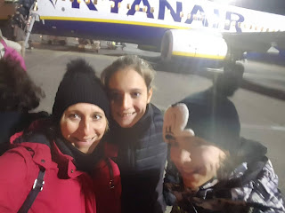
Arriviamo a Londra la mattina prestissimo e andiamo subito in centro a vedere la sfilata di Capodanno, la New Year's Day Parade nel West End
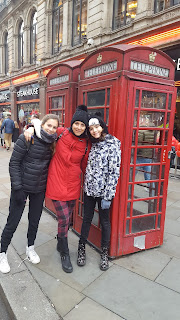
insieme gli immancabili Beghini e i Tuzi
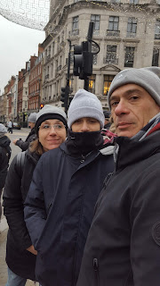
Pranzetto al pub e poi a casa stanchi per la levataccia
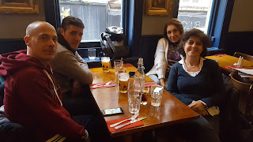
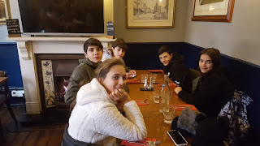
2-01 Passeggiata in centro, nei negozi più commerciali ed esagerati di Londra
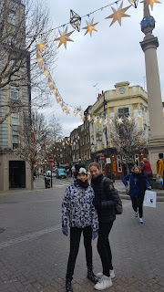
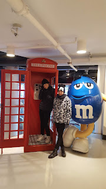
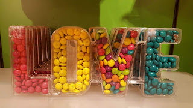
 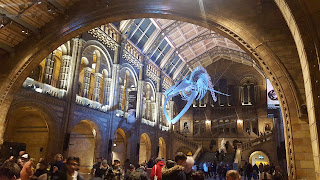
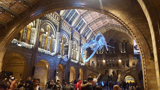
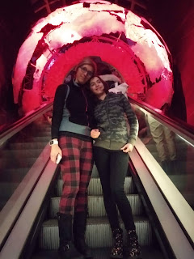
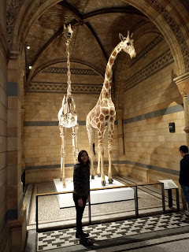

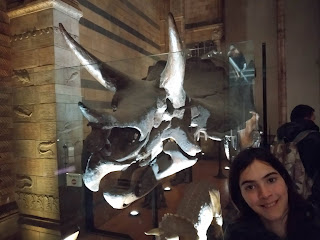
Bellissima Londra con i suoi contrasti antico e moderno
6-01 Altro bel mercato e poi si ritorna a casa ....sob....ciao Londra
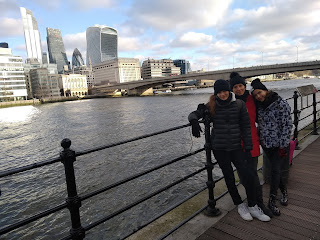
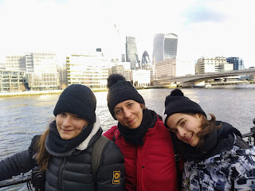
Inizio anno bucolico
10-01-2020
Questo anno inizia con tante passeggiate in Cafferella e agli Acquedotti
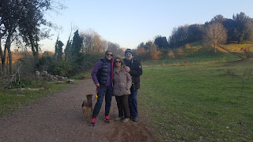
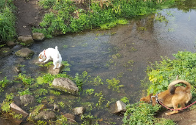
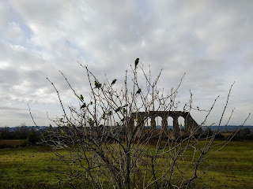
18 anni insieme
20-02-2020
dopo un bel s. valentino....
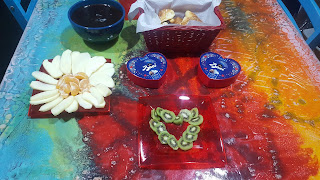
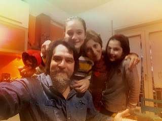
festeggiamo i nostri 20 anni insieme....una giornata di relax a Viterbo alla Therma Oasi
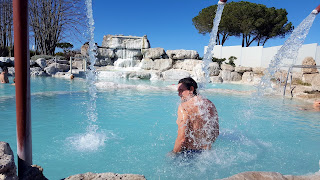

e poi a teatro a vedere i Momix
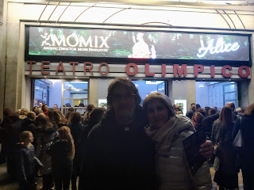
Compleanno di Matilde....con 6 mesi di ritardo
22-02-2020
Una bella festa a casa con tema Cena con delitto
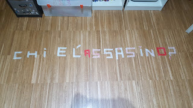
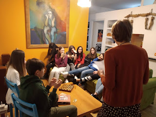
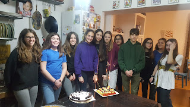
ovviamente l’ha capito solo Bea chi era l’assassino....hahahaha
Nonno Mario torna a casa
25-02-2020
Eccolo nonno finalmente a casa per la gioia di noi tutti ..... ma soprattutto di Olmo
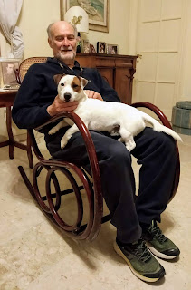
Camerette separate
28-02-2020
Deciso... è ora di avere camere separate. Meggy prende la nostra ex camera e io una cameretta tutta nuova.....Valentino inizia i lavori...e noi dormiamo per terra
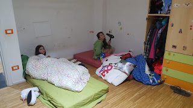
chiudiamo le mensole

chiudiamo la porta comunicante
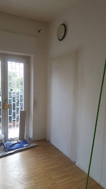
dipingiamo le pareti di blu e di viola
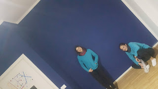
e troviamo anche un posto al pianoforte

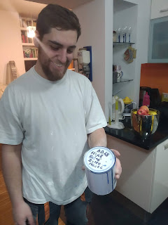
Auguri nonno Mario
01-03-2020
Un compleanno speciale insieme alle tue splendide nipotine

Settimana bianca a Campitello di Fassa .....bhè mezza settimana....
10-03-2020
7 marzo - Si parte per Campitello di Fassa, un bel gruppone misto di vecchi e nuovi amici.
Il periodo è un pò particolare perchè sta dilagando un terribile virus, il COVID-19. Ma noi decidiamo di tentare la sorte e partire.
L’albergo è bellissimo e c’è tanta neve
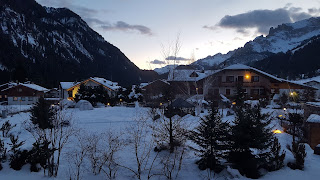
8 marzo - Poca gente, piste semi vuote, sole ....ne approfittiamo per una splendida sciata
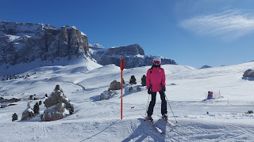
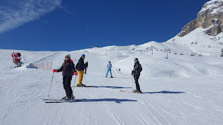
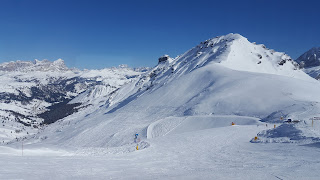
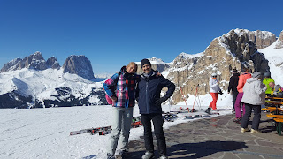
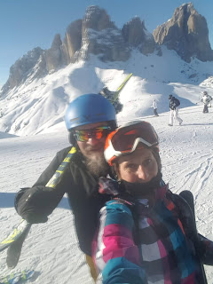
9 marzo - Oggi si tenta il giro del Sella Ronda, partenza da Campitello
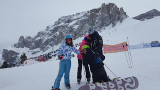


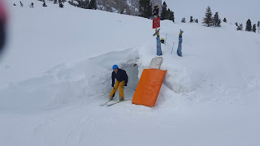
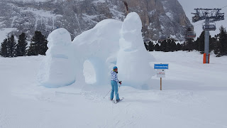
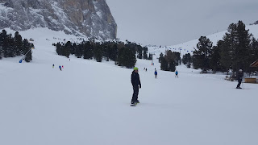
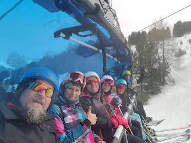
sciata sulle bellissime piste di Selva di Val Gardena ... poi inizia a nevicare e siamo costretti a rientrare.
La sera in albergo la tensione è alta, il presidente della repubblica dichiara che tutta l’Italia è in zona rossa e dobbiamo tutti tornare a casa. Inizia il lockdown.
Si balla ai tempi del coronavirus
19-03-2020
Non scriviamo da parecchio per mille motivi, e ricominciamo in un momento particolare della nostra vita. Il mondo intero sta fronteggiando il CORONAVIRUS e siamo costretti a rimanere a casa.
Però non ci perdiamo d'animo ed in attesa del più grande ballo collettivo di tutti i tempi, ci alleniamo ...
COVID-19 - Il lockdown
09-05-2020
Incredibile pensare ad una pandemia nel 2020, eppure questo virus terribile sta dilagando a macchia d’olio facendo migliaia di vittime.
Siamo chiusi in casa, in smart working e DAD - didattica a distanza.
Ci stiamo reinventando una vita con ritmi diversi, in isolamento sociale. Emotivamente e fisicamente difficile.
Per due mesi e mezzo abbiamo vissuto in casa e in giardino, una gran fortuna a dire il vero.
Lavorando e studiando
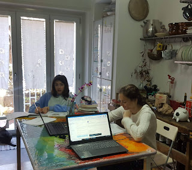
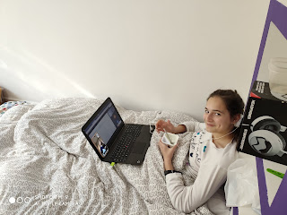
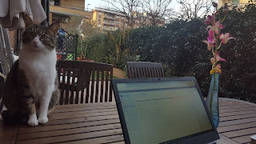
suonando e imparando a programmare
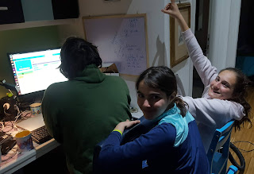

coccolando le micie e Olmo, che ogni tanto stava con noi
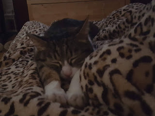


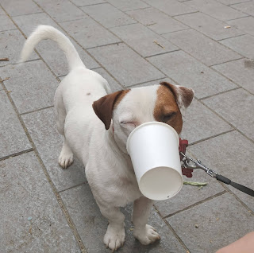
cucinandoci cose buone - tra cui ravioli cinesi, gnocchi e pesce di tonno - e facendo ottimi aperitivi ....

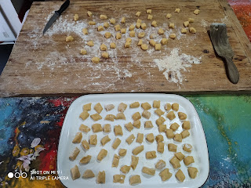
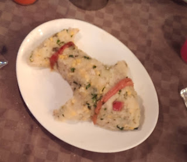

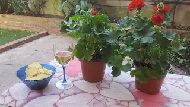

e tante partite a ping pong e biliardino
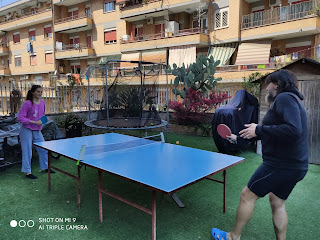
ma anche allenandoci a casa con le app di fitness e la bici da spinning
facendo lavoretti di bricolage, dipingendo di rosso l’armadio e montando tutti i mobili che man mano ci consegnavano ...tranne i letti....

curando il nostro giardino e raccogliendo i conquat per fare la marmellata
abbiamo anche fatto l’orto in cassetta ...con grandi soddisfazioni


e poi ....abbiamo festeggiato .... il compleanno di Cate e zia Betta in video conference con i nonni
la festa del papà con degli ottimi bignè fatti da mamma
il compleanno di papà
il compleanno di mamma


Pasqua
il compleanno di nonno
il 25 Aprile con il BBQ
insomma due mesi....che alla fine sono passati....
Prime uscite .... in bici
17-05-2020
9-05 Siamo ancora in zona rossa ma si può andare in bici, cosi decidiamo di percorrere la ciclovia del Tevere, nel tratto ciclabile che da casa ci porta fino a Labaro, passando per circo massimo, lungotevere, ponte della musica, ponte milvio, parco di tor di quinto, castel giubileo
ci sono anche le tartarughe nel laghetto del Parco di Tor di Quinto
insomma più di 50Km ....ci voleva proprio

17-05 Stavolta altro pezzo di ciclabile, da casa verso sud fino a Fiumicino ...si parte in tanti ....
ma si arriva in pochi
Stavolta però torniamo in treno....solo ad andare abbiamo fatto più di 60km
Esame di 3 media per Mati
19-06-2020
Lo stravolgimento di questo anno si riflette anche sul temutissimo esame di terza media....che per Matilde invece diventa una tesina orale multidisciplinare .... il suo tema?....la musica ovviamente ...dopo aver passato mesi a guardare la serie Glee ....eccola al suo esame....un pò agitata all’inizio ma poi prende il via e ripete benissimo e tutto d’un fiato
I proff si complimentano per i sui tre anni di medie e le fanno tanti auguri per il suo futuro....chiusa la connessione....un bel pianto
e due coccole con mamma
.... e finalmente libera
Giugno al Circeo
30-06-2020
Siamo appena usciti dal lockdown e decidiamo di trascorrere il mese di giugno a casa di zia Aldina al Circeo. Smart working e ultimi giorni di DAD, e preparazione della tesina di 3 media di Matilde
e festeggiamo anche il nostro 12esimo anniversario di matrimonio
Si fanno tante cose.....si prepara la tesina ....con Olmo
si va a vela
si fanno lunghe passeggiate e ci godiamo la spiaggia anche con le giornate più fredde
si fanno nuove amicizie
e ci vengono a trovare i nonni e gli amici


E poi abbiamo scoperto la parte del faro.....bellissima
Arriveduar Sabaudia....splendida spiaggia dal tramonto indimenticabile

Estate ligure
15-07-2020
E dopo il Circeo si va in Liguria, sempre in smart ....
con mare a pausa pranzo o serale

uscite in barca con Stefano
aperitivi serali e relax in terrazza

e serate con Carolina, Isa e Claudio
e si impara anche a curare le arnie con Fabio

e serate a Bastia con zia Giorgia e Silvano

con notte in tenda

e uscite in canoa a Bergeggi


e picnic in spiaggia
e poi vengono anche zia Betta e Cate

e nel frattempo il povero Morghi è stato anche operato ad una brutta ciste alla zampa

e il povero Silvano festeggia 80 anni delle S di Gorra
Compleanno di nonna Lilli
16-07-2020
Tanti auguri nonna

Val Maira con nonni e zia
28-07-2020
Finalemente siamo in Val Maira, una valle del cuneese rinomata per la sua bellezza...e in effetti!
Prendiamo una casetta a San Michele di Prazzo insieme a zia Giorgia, Morghi e i nonni
25/07 Stamattina saliamo per i tornanti di Marmora per arrivare alla Gardetta
M&P salgono al colle del Mulo


e alla statua di Pantani a 2500m del colle della Fauniera

poi sosta al laghetto di Resile

26/07 Oggi affrontiamo una salitona che da San Michele ci porta verso la vetta del Chersogno.

Non arriviamo in cima ma facciamo la deviazione per il Lago Camoscere


Che camminata oggi!
27/07 Passeggiata a Chiappera, dove la valle finisce con montagne stupende e le cascate di Stroppia
Ci portiamo nonno fino alla base delle cascate! Grande!
e poi tutti a pranzo al Campo Base

Torniamo alla casetta e nel pomeriggio facciamo, sempre con nonno, il sentiero Remo Einaudi, detto anche il sentiero degli Gnomi, dove gufi, volpi, civette e gnomi ci accompagnano
28/07 Stamattina Parco avventura


e poi passeggiata alle sorgenti del Maira....dove l'acqua è gelida!


Ponte del diavolo a Dronero
e apericena a Cuneo in un localino gourmet!

WE nelle Langhe per M&P
13-08-2020
Dopo tutti questi mesi insieme M&P si prendono un we da soli e se ne vanno nelle Langhe.
Barolo e il suo particolare museo del vino


curarsi con il vino
vigneti a perdita d'occhio...
primo bicchiere della giornata.... poi passiamo nella Cantina del Glicine a Nieve e facciamo un'ottima degustazione...con Arneis, Nebbiolo, Barbaresco, Barbera e Moscato!
Poi relax alla Rosa Gialla e cena in un ottimo ristorante a Monforte d'Alba, le Case dellaSaracca.

La mattina super colazione in albergo e si riparte
alla ricerca delle chiesette di Tremlett, la cappella de La Morra

poi il castello di Castiglione Falletto

e quello di Grinzane Cavour
le panchine giganti
la chiesetta di Coazzolo
e poi relax nella piscina dell'albergo Castiglione Langhe .... con aperitivo all'Arneis

Cena tipica nel bellissimo agriturismo I tre poggi
Visita interessantissima alla cantina Coppo a Canelli, con la sua cattedrale sotterranea.


e immancabile degustazione!

si torna verso casa passando per Alba ....bellissimo we!!!
Un passaggio a Valdolmo
17-08-2020
Un passaggio a salutare i nonni e Olmo

con passeggiata a cavallo
e corso di cucina da zia Fiorella
Sardegna
01-09-2020 In questa strana estate riusciamo anche a finalizzare lo scambio casa che avevamo concordato a dicembre con la simpatica Iside. La sua casetta in Sardegna, accanto al porticciolo di Marina di Capitana, vicino Cagliari ci sta aspettando! Eccoci finalmente!
23/08
Noleggiamo gli scooter al porto di Capitana (meravigliosamente gentili e
disponibili i ragazzi di Cagliari Rent!) e siamo pronti a girare!
Cala Regina il nostro primo bagno, acqua bellissima
Seratina a Cagliari a fare due passi sul bastione di Saint Remì e prenderci un aperitivo lungo le mura e cenare in una trattoria tipica con malloreddus, pesce alla griglia e seadas

24/08 Spiaggia di porto Giunco. Tanto vento ma acqua meravigliosa.

25/08 Passaggio radente con ventone al Poetto, solo i fenicotteri posso stare ...
proviamo Cala mosche ma è super affollata, invece poco più avanti ci fermiamo in una spiaggetta minuscola con stabilimento privato, Le Paillote per fare un bagno ..
e dopo scendiamo per l'impervio sentiero che porta a cala Fighera. Una caletta rocciosa stupenda, un pò calda e di dominio nudista....ma ne vale la pena!

Nel pomeriggio andiamo a visitare il giardino sonoro di Pinuccio Sciola, un artista di campagna che ha saputo tirare fuori l'anima dalle rocce facendole risuonare meravigliosamente


26/08 Relax a casa la mattina e poi ci spostiamo verso Punta Molentis, dove l'ingresso a numero chiuso ci convince subito a girare dietro il promontorio e scendere sul latoB....ovviamente deserto!
nel
tardo pomeriggio ci riaffacciamo....e bhè ne vale proprio la pena....spiaggia
di sabbia bianchissima con tipiche rocce bianche
aperitivo in attesa del tramonto
.... tramonto che da qui ha tutto un altro colore
27/08 Vicino casa abbiamo un spiaggia dai colori incredibili, chiamata appunto Mari Pintau

Nel pomeriggio sia papo che Meggy non si sentono bene, febbre e
raffreddore....così a cavallo nelle saline del parco naturale del Molentargius
ci andiamo solo io e mamma
28/08 Colazione al Poetto e poi tappona fino alla spiaggia di Su Giudeu
con
escursione sul divano!

Bellissima la zona di Chia

29/08 Mattina nella spiaggia di Is Canaleddus, sassi e compiti! Papo è ancora un pò malaticcio!
In serata facciamo un pic-nic a Mari Pintau e ci godiamo uno splendido tramonto

30/08 Giornata nuvolosa, visitiamo l'antichissima città di Nora, fenicia, punica, romana!

serata a Cagliari ....ultima seadas :)


31/08 Il temporale non ci scoraggia, andiamo a vedere la bellissima spiaggia di Santa Giusta, costa Rei


e poi esce il sole!

Compleanno di Mati 14
07-09-2020
Quest'anno si festeggia con poche amiche. Si va a pranzo in centro...
poi una bella passeggiata e la torta con nonni, zia, cugina e i beghini

Passeggiata a monte Livata
19-09-2020
Un piccolo trekking sulla cima del monte Autore
e poi sbraciolata con i colleghi
e la piccola Flaminia
23-09-2020 Esperienza indimenticabile e da ripetere....
Compleanno di Meggy 12
24-09-2020 Prime candeline alle 7 di mattina con la crostata fatta da Mati
il pomeriggio alla mostra di Banksy

irriverenti....
 e
candeline anche la sera
e
candeline anche la sera
e poi si festeggia con le amiche

Raccolta olive 2020
07-11-2020
Sembravano poche.... e invece ... 4 we a raccogliere le olive

con questi meravigliosi colori autunnali

e tramonti speciali
e poi al frantoio
Padel love
22-11-2020
Nato per gioco, diventato una passione
e c’e anche chi festeggia il compleanno giocando un torneo

Visita all’antica Monterano
29-11-2020
Christmas mood
08-12-2020
Quest’anno nuovo albero di Natale e nuove decorazioni
ma stesse micie appassionate
e un tocco di eleganza
Monte Livata e le ciaspole
20-12-2020
Che scoperta queste ciaspole e le passeggiate a Monte Livata!
La prima volta il 20 dicembre

e poi bissiamo e trissiamo a gennaio, con le amiche e in famiglia

Buon Natale 2020
25-12-2020
I preparativi fervono....si fanno i ravioli con i nonni e il tronchetto

e poi si festeggia ....quest'anno da soli ....
e arriva un regalo assolutamente inaspettato.....la promessa di una cucciola :D
OLIVIA